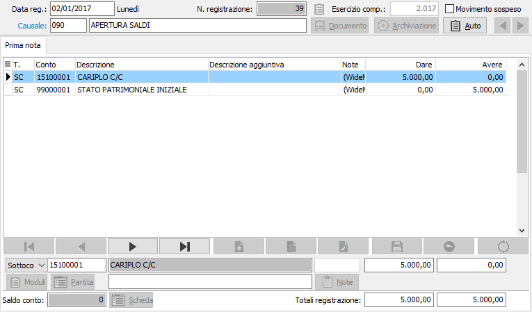
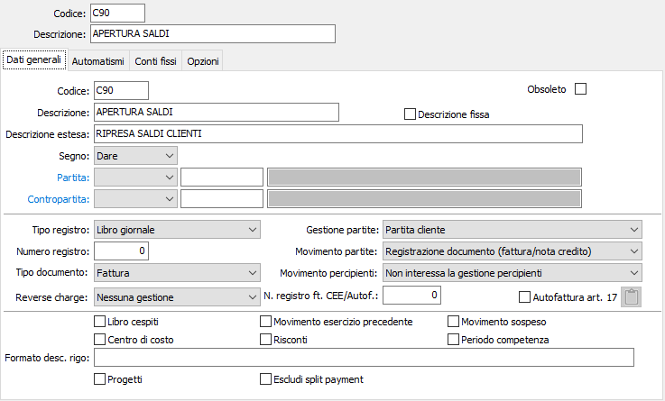
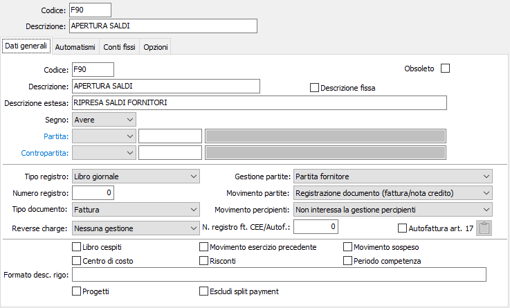
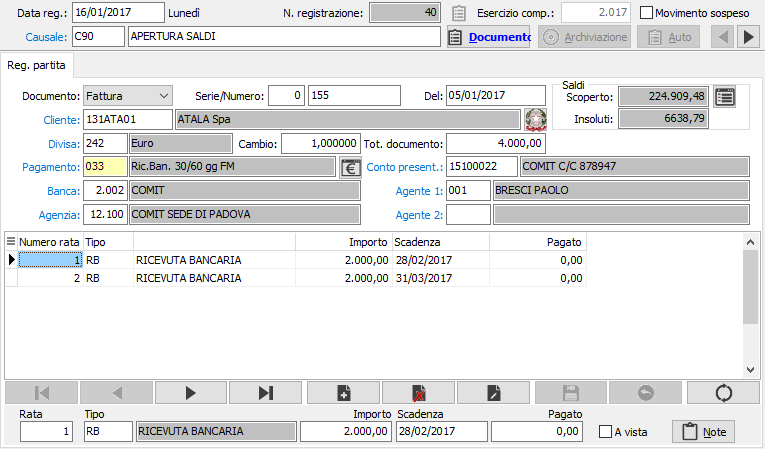
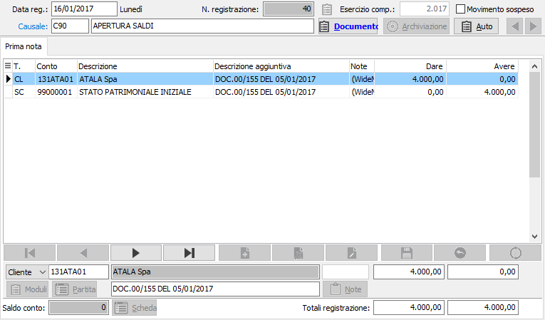

Ripresa saldi d’apertura
Come si è detto, OS1 ha la possibilità di definire uno stretto legame tra le righe di contabilità relative a clienti e fornitori e le corrispondenti partite aperte. Ciò garantisce la perfetta corrispondenza fra totali dei mastri clienti e fornitori e totali delle partite aperte e degli scadenzari, ma impone attenzione all’atto dell’installazione del programma per quanto attiene al primo (e unico) inserimento manuale dei saldi di apertura. Intendiamo con questo termine sia l’inserimento del bilancio d’apertura per i soli conti patrimoniali, se l’uso del programma inizia con il primo giorno dell’esercizio, sia l’inserimento dei saldi riferiti ad una data intermedia, sia per i conti patrimoniali che per i conti di reddito, se l’uso del programma inizia a esercizio inoltrato.
Nel presentare queste note si da per effettuata, da parte dell’utente, la lettura del paragrafo relativo all‘immissione movimenti contabili, che illustra le modalità di inserimento della prima nota e, quindi, anche dei saldi di apertura.
Per facilitare le operazioni di ripresa dei saldi è disponibile nei servizi della procedura il programma Ripresa saldi piano dei conti, che consente di evitare la maggior parte delle operazioni, che comunque è possibile effettuare anche manualmente, descritte in questa sezione. L'utilizzo della suddetta procedura è comunque subordinato alla presenza delle causali di ripresa saldi descritte in questo capitolo.
Fra le causali contabili obbligatorie presenti su OS1 sono previste una causale “Apertura esercizio” e una causale “Chiusura esercizio” che devono anche essere presenti nei codici di conto fissi della configurazione applicativo di contabilità. Queste due causali vengono utilizzate dai programmi automatizzati di chiusura e apertura esercizio. La presenza di queste due causali nelle registrazioni contabili di apertura e chiusura consente particolari tipi di analisi e stampa delle schede contabili e di elaborazione dei bilanci. Pertanto queste due causali possono essere utilizzate solo durante le chiusure e aperture automatiche d’esercizio, pena l’erroneo funzionamento di taluni programmi.
Al momento dell’avviamento di OS1 e della relativa ripresa manuale dei saldi iniziali dei conti non si devono usare le due causali summenzionate.
Ripresa saldi in assenza di partite aperte clienti/fornitori
Per l’inserimento dei saldi d’apertura è possibile operare con la causale contabile libera (priva di codici di sottoconto). Non volendo procedere in tal modo, occorrerà creare ed utilizzare causali alternative di ripresa saldi iniziali con codici diversi.
Esistono due modalità di inserimento dei saldi di apertura:
tramite singole registrazioni elementari, costituite da un rigo contenente il conto da aprire e un rigo di contropartita riferito al conto di servizio Bilancio d’apertura (es: Cassa a Bilancio d’apertura; Banca a Bilancio d’apertura; Cliente xyz a Bilancio d’apertura; Bilancio d’apertura a Fornitore xyx; solo nel caso di riporti in corso di esercizio, Merci c/acquisti a Bilancio d’apertura; Cancelleria a Bilancio d’apertura; Bilancio d’apertura a Merci c/ vendite, ecc);
oppure con registrazioni che prevedono l’uso del # Diversi (es: Cassa in dare, Banche in dare, Immobilizzazioni in dare ecc e un totale complessivo in Bilancio d’apertura in avere; Fondi ammortamento in avere, Debiti in avere, Conti di capitale in avere e un totale complessivo in Bilancio d’apertura in dare)

La seconda soluzione sarebbe più veloce, e tuttavia presenta la controindicazione costituita dalla possibile necessità di una successiva variazione in cui, dovendo correggere ad esempio il 96mo rigo, occorre scorrere i precedenti 95 righi prima di potersi posizionare sul rigo da correggere.
Ripresa saldi in presenza di partite aperte clienti/fornitori
Se sono presenti i moduli opzionali di Gestione partite aperte clienti e fornitori, la ripresa manuale dei saldi iniziali dei conti di contabilità generale avviene come già descritto. Viceversa, per la ripresa manuale dei saldi di clienti e fornitori è richiesto l’uso di apposite causali, per l’evidente motivo che tali saldi, costituiti da una o più fatture, devono anche essere inseriti nelle partite aperte al fine di poter generare solleciti, estratti conto, scadenzari, ecc. Taluni utenti ipotizzano di inserire i soli saldi contabili senza utilizzare le apposite causali. È assolutamente sconsigliabile perché le nuove fatture registrate creano la relativa partita e all‘atto della registrazione dei pagamenti occorrerebbe operare in modo diverso per registrare il pagamento delle nuove fatture o il pagamenti di fatture precedenti alla ripresa saldi. Comunque, fino al completo azzeramento dei saldi iniziali, non sarebbero utilizzabili gli estratti conto e gli scadenzari. Prima di iniziare la ripresa saldi è tuttavia opportuno decidere quale modalità utilizzare fra le due possibili:
la prima: anche se il saldo di un cliente o fornitore è costituito da più fatture, è possibile inserire il saldo complessivo. In questo caso, nelle partite aperte verrà inserita una “maxi-fattura” fittizia di importo corrispondente al saldo, ed i successivi pagamenti scalerebbero parzialmente tale maxi fattura fino al suo completo azzeramento. Questa modalità determina una esposizione non analitica delle singole fatture negli estratti conto e non può essere utilizzata nel caso di saldi provenienti da fatture in divisa estera, perché causerebbe errori nel calcolo delle differenze cambi.
la seconda, più precisa anche se più lunga, di registrare una per una le fatture che compongono il saldo di apertura.
Causali contabili per l’inserimento dei saldi clienti e fornitori
In entrambi le modalità di ripresa saldi, la procedura prevede la creazione di due causali contabili che verranno utilizzate per l’inserimento dei saldi iniziali di clienti e fornitori.


Tramite queste causali, in cui non è ovviamente importante il codice ma il contenuto, è possibile effettuare registrazioni con diversi fornitori o clienti.
Le due causali contabili presentate servono rispettivamente per le riprese saldi da fatture o note di credito di clienti e di fornitori.
Può avvenire che a formare il saldo del cliente o del fornitore concorrano anche eventuali anticipi. In questo caso occorrerà utilizzare le normali causali di Anticipo di cliente o Anticipo a fornitore.
Ripresa saldi da fatture / note credito
La sequenza illustrata, con l’ovvia inversione della sezione, vale sia per i saldi di clienti che per i saldi di fornitori.
Richiamando l’apposita causale, viene visualizzata la sezione video “Registrazione partita” che consente di inserire gli estremi della prima fattura/nota di credito/anticipo che concorre a formare il saldo del cliente /fornitore da inserire.

Il primo combo box permette di indicare il tipo di documento (Fatture; Nota di credito), che concorre a formare il saldo; segue la richiesta dell’eventuale serie del registro sezionale Iva, il numero del documento e la data del documento stesso.
Viene quindi richiesto il codice del cliente o del fornitore e, a conferma, vengono visualizzate la divisa, il cambio, la modalità di pagamento, l’eventuale banca, agenzia di appoggio, conto di presentazione, agente 1 e agente 2 desunti dall’anagrafica del cliente o del fornitore. Vengono inoltre visualizzate, nel castelletto delle scadenze, le scadenze su cui è ripartito il pagamento della fattura in questione. Tutte le informazioni ad eccezione del codice cliente o fornitore possono essere modificate dall’utente ove se ne presenti la necessità.
Si tenga inoltre conto che una eventuale modalità di pagamento a mezzo effetti determinerebbe la creazione degli effetti stessi. Pertanto, ove gli stessi fossero già stati emessi con la precedente applicazione, la modalità di pagamento deve essere modificata con una analoga che prevede la rimessa diretta.
Confermando l’importo delle scadenze, che risulta comunque nella divisa originaria del documento, premendo il tasto Pagina giù viene visualizzata la sezione video Prima nota che presenta con l’importo, eventualmente convertito nella divisa di conto, il documento che concorre alla formazione del saldo del cliente/ fornitore attivo.

Ripresa manuale del credito Iva
La gestione delle liquidazioni Iva e del trattamento del credito Iva dal periodo precedente è completamente automatizzata su OS1. Tuttavia al momento dell’inizio dell’utilizzo di OS1 può sussistere un credito utilizzabile dal periodo precedente. Per riportare il credito precedente è sufficiente inserire attraverso la manutenzione liquidazione Iva inserire i dati dell’ultima liquidazione Iva. Quindi se la prima liquidazione Iva che verrà eseguita su OS1 è quella di gennaio 2002 è sufficiente inserire la liquidazione del mese di dicembre 2001 inserendo il valore del credito precedente.
Ripresa manuale del plafond
Prima di iniziare la gestione Iva con OS1, gli utenti esportatori abituali che godono del trattamento del plafond per gli acquisti sono tenuti ad inserire in una apposita tabella l’importo del plafond per l’anno in corso. Negli anni successivi, l’importo del plafond verrà richiesto all’atto della creazione del nuovo esercizio. Se la liquidazione Iva è quella del primo mese è necessario inserire manualmente il valore relativo al plafond nella tabella Protocolli Iva Generali, se invece la liquidazione è quella di un mese successivo al primo inserire nella tabella liquidazioni Iva il dato relativo alla liquidazione Iva del mese precedente riportandovi anche i dati relativi al plafond residuo.